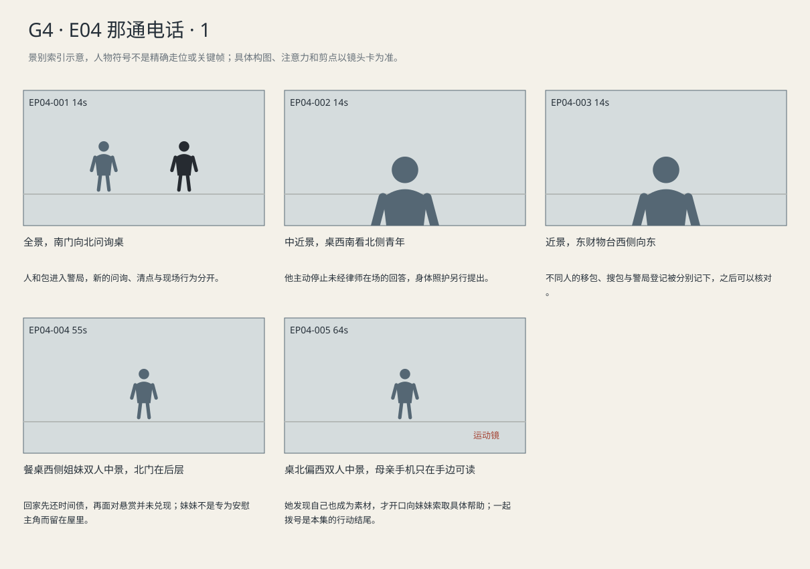

青年先要求律师，移包与开包责任分别登记；玛拉没有拿到付款，反而看见自己已被圈进传播画面。
剧本Markdown · 全部独立复制稿 · 英语字幕 · 中文字幕
详细剧本
时长说明：本集2分41秒：警局登记与家庭余波已经形成完整变化，按自然落点结束。
E04-SC02 · 上午·同日稍后 · POLICE
警局南侧接待门内，中央问询桌对着北墙时钟，东边是财物台。路易吉无口罩，穿街装，双手前铐，坐中央桌北侧。黑背包已经在东财物台，警员乙在旁；警员甲站桌南边。
警局中央桌前，甲把水推到青年前铐能触到的位置。
警员甲（英语）：Need a medic?
中文对照：要叫医护吗？
路易吉没有喝，先把脚从椅下移出一点。甲拉近自己的椅子，翻开问询页，笔还没落。
路易吉（英语）：I want a lawyer before I answer anything.
中文对照：我要先见律师，再回答问题。
甲的笔停住。路易吉这才伸出两只铐在一起的手，把杯子拖近。
路易吉（英语）：My back hurts. Can I move the chair?
中文对照：我的背疼，能挪一下椅子吗？
甲合上问询页，指向椅旁空位，等他自己换姿势。
乙在东台把笔记与手机分别放到登记纸旁，枪械相关物品留在不透明袋内。他指着一栏问甲。
警员乙（英语）：You moved the bag, right? I need your name here too.
中文对照：包是你挪的，对吧？这儿也得填你的名字。
甲指着移包一栏确认自己的姓名，再指开包一栏；乙在移包栏记甲、开包栏记自己，逐栏核对。
E04-SC03 · 傍晚·同日 · MARA-HOME
玛拉公寓中央餐桌亮一盏暖灯，东厨房水槽堆着杯子，西窗天色将暗，北卧室门半掩。玛拉刚从南门回来，灰风衣罩黑工服；棕卷发的乔穿深紫针织衫、深裤守在桌边，艾莉在北屋画画。手机右手，个人包挂左肩。
乔看墙上时间。玛拉放包取出蓝夹，先把右手手机放桌边。
玛拉（英语）：I'm sorry. They kept asking me the same thing.
中文对照：对不起。他们翻来覆去问那些事。
乔（英语）：I know. I called work.
中文对照：知道。我给单位打过电话了。
乔把一杯水推过去，玛拉没接。北屋传来蜡笔盒落地声，两人都转头。
艾莉（英语）：I'm okay. It was the box.
中文对照：我没事。盒子掉了。
乔往北走两步，听见孩子在自己捡笔，停住。玛拉把蓝夹盖好，手留在上面。
乔（英语）：Did they pay you?
中文对照：他们给你钱了吗？
玛拉（英语）：They took my number.
中文对照：他们记了我的号码。
乔（英语）：A number for what?
中文对照：留号码干什么？
玛拉（英语）：They didn't say. I had to ask who to call.
中文对照：没说。我还得自己问该找谁。
乔把水重新推近一点；玛拉这次拿起来，却没喝。
手机收到店内视频。玛拉放下水，点开看，画面中有人圈出柜台后的她。乔伸手要拿，玛拉先把进度拖回，再看一遍，才转给妹妹。
乔（英语）：Who sent you that?
中文对照：谁发给你的？
玛拉（英语）：Someone from work. It's already everywhere.
中文对照：店里的人。已经传开了。
乔把手机音量调低。蓝夹被手机碰开，拒赔单后露出玛拉签字的加班申请。
玛拉（英语）：I should've been home. I'm the one who asked for that shift.
中文对照：我本来该在家的。是我自己要加那一班。
她翻扣手机，手停在写着周五的通知上。北屋捡笔声音停止，餐桌没有人接她那句自责。
玛拉（英语）：Will you call billing with me? I can't go through it all again on my own.
中文对照：陪我打给账务，行吗？我一个人实在讲不下去了。
乔拿起总机号码便签，将自己的手机放到两人中间拨号。玛拉把该报的号码找出来，放在杯子旁。等待音乐开始。她把那杯水喝下第一口。
玛拉将报号码的便签推给乔。
玛拉（英语）：Can you start? Just say it's about the renewal.
中文对照：你先说，行吗？就说是续批的事。
乔把便签转到自己面前，手机仍留两人中央，准备替她开口。
景别索引板
简化人物符号仅用于检索景别。完整镜头卡、信息变化及相邻剪点另页阅读。

逐镜复制稿
EP04-001 · 制作号E04-SH008 · 14s · 全景，南门向北问询桌
人和包进入警局，新的问询、清点与现场行为分开。
成片采用 [0,14) 秒；1个生成候选，技术边界不是剪点。候选未生成。
16:9横屏，当代美国真人现实悬疑。环境低至中等饱和，人物肤色保持真实差异与自然纹理；深黑保留衣料和道具分离，白纸与白领高光柔和有层次。冷暖来自本镜已有物理光源，不统一青橙、不磨皮、不以整体欠曝制造悬疑。遵循本镜机位、表演与焦点，不擅自追加缓推、急变焦或摇晃。
场次风格：本场时段：上午·同日稍后。本场光源启用及强度以明确时段和正文为准，同场反打继承光源方向；不因景别变化任意换色温。 本地光色与材质：冷白顶灯、旧墙、金属与衣料保留差异；人物肤色不一律染青，财物台与问询桌的记录动作必须可辨。
总生成长度16秒，为中间14秒采用区间保留开头和结尾各1秒自然余量，不增添剧情。
人物：
路易吉，26岁意裔男性，深棕短卷发、浓眉、棕眼、较长椭圆脸、清楚下颌、精瘦体态；深炭灰连帽夹克、黑直筒裤、灰运动鞋。黑布背包为独立道具，按本镜起态与动作确定在脚边、肩上或由警方持有，不能因服装描述自动背回身上。不戴口罩。声音中低、清楚克制。
两名成年警员，深蓝制服、防护背心；一名主问，一名核对身份。不让配角无因齐转头。
环境与光源：接待门南、问询桌中央、存放财物台东、墙钟北，顶灯冷白；现场搜包和警局清点须明确不同地点/时间。
景别/机位：全景，南门向北问询桌
构图：北墙钟、中央青年、东财物台
起始画面：青年前铐坐北侧；包东台
事件与表演：警局中央桌前，甲把水推到青年前铐能触到的位置。警员甲对路易吉说本镜第1句英语对白，例行确认当前需要，不替对方作答。路易吉没有喝，先把脚从椅下移出一点。甲拉近自己的椅子，翻开问询页，笔还没落。
注意力变化：餐厅现场搜包已发生。 → 人和包进入警局，新的问询、清点与现场行为分开。
摄影机：固定南门朝北全景，问询桌中央、财物台东侧，重新建立与餐厅不同地点。
焦点：保持桌、前铐、东台黑包的空间关系。
结束状态：水桌中，青年前铐坐北侧，甲南侧翻问询页，包东台。
声音：<冷顶灯嗡声、东台纸袋摩擦>
(无背景音乐)
准确对白按顺序：
警员甲向路易吉，例行确认当前需要，不替对方作答，只使用英语说一次：{Need a medic?}
只说列出的英语原句；导演说明不发声，不说中文译文，不额外加旁白或对白。手机/公文/字幕均由后期叠加，生成画面不排字。单镜连续，不加入内部切镜；前后保持身份、服装、门窗、物件与接触状态一致。静帧起态备稿
16:9横屏，当代美国真人现实悬疑。环境低至中等饱和，人物肤色保持真实差异与自然纹理；深黑保留衣料和道具分离，白纸与白领高光柔和有层次。冷暖来自本镜已有物理光源，不统一青橙、不磨皮、不以整体欠曝制造悬疑。遵循本镜机位、表演与焦点，不擅自追加缓推、急变焦或摇晃。
场次风格：本场时段：上午·同日稍后。本场光源启用及强度以明确时段和正文为准，同场反打继承光源方向；不因景别变化任意换色温。 本地光色与材质：冷白顶灯、旧墙、金属与衣料保留差异；人物肤色不一律染青，财物台与问询桌的记录动作必须可辨。
路易吉，26岁意裔男性，深棕短卷发、浓眉、棕眼、较长椭圆脸、清楚下颌、精瘦体态；深炭灰连帽夹克、黑直筒裤、灰运动鞋。黑布背包为独立道具，按本镜起态与动作确定在脚边、肩上或由警方持有，不能因服装描述自动背回身上。不戴口罩。声音中低、清楚克制。
两名成年警员，深蓝制服、防护背心；一名主问，一名核对身份。不让配角无因齐转头。
接待门南、问询桌中央、存放财物台东、墙钟北，顶灯冷白；现场搜包和警局清点须明确不同地点/时间。
全景，南门向北问询桌；起态构图：青年前铐坐北侧；包东台。空间方位按上列环境，人物只处于起态；本镜后续调度不出现在静帧。此图不描画尚未发生的动作，不生成字幕和公文长字。
| 英语原句 | 中文对照 | 预定窗口 |
|---|
| 警员甲：Need a medic? | 要叫医护吗？ | 0.6–2.38s |
观众信息：餐厅现场搜包已发生。 → 人和包进入警局，新的问询、清点与现场行为分开。
切点：甲的笔停在问询第一页，青年开口。
接口：接青年要求律师
EP04-002 · 制作号E04-SH009 · 14s · 中近景，桌西南看北侧青年
他主动停止未经律师在场的回答，身体照护另行提出。
成片采用 [14,28) 秒；1个生成候选，技术边界不是剪点。候选未生成。
16:9横屏，当代美国真人现实悬疑。环境低至中等饱和，人物肤色保持真实差异与自然纹理；深黑保留衣料和道具分离，白纸与白领高光柔和有层次。冷暖来自本镜已有物理光源，不统一青橙、不磨皮、不以整体欠曝制造悬疑。遵循本镜机位、表演与焦点，不擅自追加缓推、急变焦或摇晃。
场次风格：本场时段：上午·同日稍后。本场光源启用及强度以明确时段和正文为准，同场反打继承光源方向；不因景别变化任意换色温。 本地光色与材质：冷白顶灯、旧墙、金属与衣料保留差异；人物肤色不一律染青，财物台与问询桌的记录动作必须可辨。
总生成长度16秒，为中间14秒采用区间保留开头和结尾各1秒自然余量，不增添剧情。
人物：
路易吉，26岁意裔男性，深棕短卷发、浓眉、棕眼、较长椭圆脸、清楚下颌、精瘦体态；深炭灰连帽夹克、黑直筒裤、灰运动鞋。黑布背包为独立道具，按本镜起态与动作确定在脚边、肩上或由警方持有，不能因服装描述自动背回身上。不戴口罩。声音中低、清楚克制。
两名成年警员，深蓝制服、防护背心；一名主问，一名核对身份。不让配角无因齐转头。
环境与光源：接待门南、问询桌中央、存放财物台东、墙钟北，顶灯冷白；现场搜包和警局清点须明确不同地点/时间。
景别/机位：中近景，桌西南看北侧青年
构图：前铐在桌边下部可见
起始画面：青年看桌上水，再看甲
事件与表演：路易吉对警员甲说本镜第1句英语对白，先保住回答的边界。甲的笔停住。路易吉这才伸出两只铐在一起的手，把杯子拖近。路易吉对警员甲说本镜第2句英语对白，确定问询暂停才提出身体需要。甲合上问询页，指向椅旁空位，等他自己换姿势。
注意力变化：警员准备提问，青年还没喝水。 → 他主动停止未经律师在场的回答，身体照护另行提出。
摄影机：固定桌西南中近景，同时见他的手、杯与甲合页边缘；不靠远景拍不清停笔。
焦点：青年为主，合页在同层边缘可读。
结束状态：杯靠青年，双腕前铐；问询页合上，甲留出换姿势空间。
声音：<椅背轻响、远无线电；问询停止>
(无背景音乐)
准确对白按顺序：
路易吉向警员甲，先保住回答的边界，只使用英语说一次：{I want a lawyer before I answer anything.}
路易吉向警员甲，确定问询暂停才提出身体需要，只使用英语说一次：{My back hurts. Can I move the chair?}
只说列出的英语原句；导演说明不发声，不说中文译文，不额外加旁白或对白。手机/公文/字幕均由后期叠加，生成画面不排字。单镜连续，不加入内部切镜；前后保持身份、服装、门窗、物件与接触状态一致。静帧起态备稿
16:9横屏，当代美国真人现实悬疑。环境低至中等饱和，人物肤色保持真实差异与自然纹理；深黑保留衣料和道具分离，白纸与白领高光柔和有层次。冷暖来自本镜已有物理光源，不统一青橙、不磨皮、不以整体欠曝制造悬疑。遵循本镜机位、表演与焦点，不擅自追加缓推、急变焦或摇晃。
场次风格：本场时段：上午·同日稍后。本场光源启用及强度以明确时段和正文为准，同场反打继承光源方向；不因景别变化任意换色温。 本地光色与材质：冷白顶灯、旧墙、金属与衣料保留差异；人物肤色不一律染青，财物台与问询桌的记录动作必须可辨。
路易吉，26岁意裔男性，深棕短卷发、浓眉、棕眼、较长椭圆脸、清楚下颌、精瘦体态；深炭灰连帽夹克、黑直筒裤、灰运动鞋。黑布背包为独立道具，按本镜起态与动作确定在脚边、肩上或由警方持有，不能因服装描述自动背回身上。不戴口罩。声音中低、清楚克制。
两名成年警员，深蓝制服、防护背心；一名主问，一名核对身份。不让配角无因齐转头。
接待门南、问询桌中央、存放财物台东、墙钟北，顶灯冷白；现场搜包和警局清点须明确不同地点/时间。
中近景，桌西南看北侧青年；起态构图：青年看桌上水，再看甲。空间方位按上列环境，人物只处于起态；本镜后续调度不出现在静帧。此图不描画尚未发生的动作，不生成字幕和公文长字。
| 英语原句 | 中文对照 | 预定窗口 |
|---|
| 路易吉：I want a lawyer before I answer anything. | 我要先见律师，再回答问题。 | 0.6–4.76s |
| 路易吉：My back hurts. Can I move the chair? | 我的背疼，能挪一下椅子吗？ | 5.11–9.27s |
观众信息：警员准备提问，青年还没喝水。 → 他主动停止未经律师在场的回答，身体照护另行提出。
切点：问询页合上，东财物台传来纸袋响。
接口：转财物台的正式清点
EP04-003 · 制作号E04-SH010 · 14s · 近景，东财物台西侧向东
不同人的移包、搜包与警局登记被分别记下，之后可以核对。
成片采用 [28,42) 秒；1个生成候选，技术边界不是剪点。候选未生成。
16:9横屏，当代美国真人现实悬疑。环境低至中等饱和，人物肤色保持真实差异与自然纹理；深黑保留衣料和道具分离，白纸与白领高光柔和有层次。冷暖来自本镜已有物理光源，不统一青橙、不磨皮、不以整体欠曝制造悬疑。遵循本镜机位、表演与焦点，不擅自追加缓推、急变焦或摇晃。
场次风格：本场时段：上午·同日稍后。本场光源启用及强度以明确时段和正文为准，同场反打继承光源方向；不因景别变化任意换色温。 本地光色与材质：冷白顶灯、旧墙、金属与衣料保留差异；人物肤色不一律染青，财物台与问询桌的记录动作必须可辨。
总生成长度16秒，为中间14秒采用区间保留开头和结尾各1秒自然余量，不增添剧情。
人物：
两名成年警员，深蓝制服、防护背心；一名主问，一名核对身份。不让配角无因齐转头。
环境与光源：接待门南、问询桌中央、存放财物台东、墙钟北，顶灯冷白；现场搜包和警局清点须明确不同地点/时间。
景别/机位：近景，东财物台西侧向东
构图：黑包、封袋、登记页；青年画外北桌
起始画面：乙戴手套，包口已开，甲在旁
事件与表演：乙在东台把笔记与手机分别放到登记纸旁，枪械相关物品留在不透明袋内。他指着一栏问甲。警员乙对警员甲说本镜第1句英语对白，让移包同事补齐署名，自己核对开包一栏。甲指着移包一栏确认自己的姓名，再指开包一栏；乙在移包栏记甲、开包栏记自己，逐栏核对。
注意力变化：警方在清点，现场开包仍是一件独立行为。 → 不同人的移包、搜包与警局登记被分别记下，之后可以核对。
摄影机：固定东台西侧近景，纸本、手机和登记手可见，青年留画外继承；不揭开不透明袋炫示物品。
焦点：移包栏与开包栏同层可见，甲依次指认、乙分别登记；姓名以后期排字清楚呈现。
结束状态：移包栏记甲、开包栏记乙，登记纸与财物同桌；笔记、手机分放，青年在画外北桌前铐状态继承。
声音：<纸袋、笔尖、墙钟滴答>
(无背景音乐)
准确对白按顺序：
警员乙向警员甲，让移包同事补齐署名，自己核对开包一栏，只使用英语说一次：{You moved the bag, right? I need your name here too.}
只说列出的英语原句；导演说明不发声，不说中文译文，不额外加旁白或对白。手机/公文/字幕均由后期叠加，生成画面不排字。单镜连续，不加入内部切镜；前后保持身份、服装、门窗、物件与接触状态一致。静帧起态备稿
16:9横屏，当代美国真人现实悬疑。环境低至中等饱和，人物肤色保持真实差异与自然纹理；深黑保留衣料和道具分离，白纸与白领高光柔和有层次。冷暖来自本镜已有物理光源，不统一青橙、不磨皮、不以整体欠曝制造悬疑。遵循本镜机位、表演与焦点，不擅自追加缓推、急变焦或摇晃。
场次风格：本场时段：上午·同日稍后。本场光源启用及强度以明确时段和正文为准，同场反打继承光源方向；不因景别变化任意换色温。 本地光色与材质：冷白顶灯、旧墙、金属与衣料保留差异；人物肤色不一律染青，财物台与问询桌的记录动作必须可辨。
两名成年警员，深蓝制服、防护背心；一名主问，一名核对身份。不让配角无因齐转头。
接待门南、问询桌中央、存放财物台东、墙钟北，顶灯冷白；现场搜包和警局清点须明确不同地点/时间。
近景，东财物台西侧向东；起态构图：乙戴手套，包口已开，甲在旁。空间方位按上列环境，人物只处于起态；本镜后续调度不出现在静帧。此图不描画尚未发生的动作，不生成字幕和公文长字。
| 英语原句 | 中文对照 | 预定窗口 |
|---|
| 警员乙：You moved the bag, right? I need your name here too. | 包是你挪的，对吧？这儿也得填你的名字。 | 0.6–6.19s |
观众信息：警方在清点，现场开包仍是一件独立行为。 → 不同人的移包、搜包与警局登记被分别记下，之后可以核对。
切点：乙在开包栏记下自己的姓名，指尖回核两栏后切；笔记封面仍完整保留。
接口：本场结果成立后切入 E04-SC03（MARA-HOME，傍晚·同日）；以新场开头建立空间和人物持物，环境声按新场接入。
EP04-004 · 制作号E04-SH011 · 55s · 餐桌西侧姐妹双人中景，北门在后层
回家先还时间债，再面对悬赏并未兑现；妹妹不是专为安慰主角而留在屋里。
成片采用 [42,97) 秒；3个生成候选，技术边界不是剪点。候选未生成。
成片镜 E04-SH011 共55秒；下面3个独立生成候选共同服务本镜。技术接续不等于成片剪点，不能将本文件整段提交为一次任务。先制作并核验连续表演、机位和声线，再决定延长或覆盖方案；当前无实际媒体。
【E04-SH011-G01 · 本镜采用 0—20 秒】
16:9横屏，当代美国真人现实悬疑。环境低至中等饱和，人物肤色保持真实差异与自然纹理；深黑保留衣料和道具分离，白纸与白领高光柔和有层次。冷暖来自本镜已有物理光源，不统一青橙、不磨皮、不以整体欠曝制造悬疑。遵循本镜机位、表演与焦点，不擅自追加缓推、急变焦或摇晃。
场次风格：本场时段：傍晚·同日。本场为傍晚过渡，窗外亮度只按正文已有暮光维持，不改成正午直射；场内既有灯具的明暗关系连续。 本地光色与材质：米灰针织、旧木、蓝夹与绿色蜡笔保留不同颜色。西窗、东厨房灯和台灯依本场时段启用；暖灯局限在实际照到的人和桌面，不染全屋橙。对白与手头生活共存，疲态和皮肤细节保留。
总生成长度22秒，为中间20秒采用区间保留开头和结尾各1秒自然余量，不增添剧情。
人物：
以下为连续镜的身份库；人物是否已入画、离场及持物只依本段起态与动作，不能把整镜所有角色同时塞入本段。
玛拉，38岁白人女性，栗棕发低马尾、眼下疲态、圆方脸，黑色polo工服、灰围裙、深灰裤、防滑鞋；灰风衣为下班外套。手机和蓝色资料夹为独立道具，位置与持物依当前镜头起态和连续动作。声音中音，快而实在，对孩子放缓。
本镜画外继承，声源/人物不入画：艾莉，9岁女孩，栗色齐肩发、柔白卫衣、浅蓝裤，画本与绿蜡笔。儿童声音自然，保留自己的兴趣与拒绝，不只当疾病道具。
玛拉妹妹乔，34岁白人女性，棕卷发、深紫针织衫、深裤；亲近直接中音；与玛拉是两张不同脸，服装跨镜延续。
环境与光源：小公寓；入口南，厨房东，餐桌中央，西窗，北侧孩子卧室；桌上玛拉的蓝色资料夹不自行换色，绿蜡笔与画本归艾莉。
景别/机位：餐桌西侧姐妹双人中景
构图：沿用该成片镜既定机位和场景方向；当前站位、朝向与持物：玛拉刚到家，乔等在桌边。
起始画面：玛拉刚到家，乔等在桌边。
事件与表演：玛拉解释警方反复问话，乔说已给单位请假；推水却无人接。
注意力变化：玛拉刚到家，乔等在桌边。 → 北屋响起蜡笔盒落地，两人转头。
摄影机：固定双人中景，让迟到、孩子的小响动、金钱问题在同一空间里改变次序。
焦点：仅响应本段当前动作与受话关系；不预先转向尚未发生的后段事件。
结束状态：北屋响起蜡笔盒落地，两人转头。
声音：<东厨房冰箱低响与窗外遥远交通声；当前空间连续环境底声；拟音只随本段真实动作与物件接触发生，已完成事件不重演；可辨英语仅为下列本段对白。>
(无背景音乐)
准确对白按顺序：
玛拉向乔，先解释迟到而非索取夸奖，只使用英语说一次：{I'm sorry. They kept asking me the same thing.}
乔向玛拉，已经替姐姐承担后果，没有立刻原谅，只使用英语说一次：{I know. I called work.}
只说列出的英语原句；导演说明不发声，不说中文译文，不额外加旁白或对白。手机/公文/字幕均由后期叠加，生成画面不排字。单镜连续，不加入内部切镜；前后保持身份、服装、门窗、物件与接触状态一致。
【E04-SH011-G02 · 本镜采用 20—38 秒】
16:9横屏，当代美国真人现实悬疑。环境低至中等饱和，人物肤色保持真实差异与自然纹理；深黑保留衣料和道具分离，白纸与白领高光柔和有层次。冷暖来自本镜已有物理光源，不统一青橙、不磨皮、不以整体欠曝制造悬疑。遵循本镜机位、表演与焦点，不擅自追加缓推、急变焦或摇晃。
场次风格：本场时段：傍晚·同日。本场为傍晚过渡，窗外亮度只按正文已有暮光维持，不改成正午直射；场内既有灯具的明暗关系连续。 本地光色与材质：米灰针织、旧木、蓝夹与绿色蜡笔保留不同颜色。西窗、东厨房灯和台灯依本场时段启用；暖灯局限在实际照到的人和桌面，不染全屋橙。对白与手头生活共存，疲态和皮肤细节保留。
总生成长度20秒，为中间18秒采用区间保留开头和结尾各1秒自然余量，不增添剧情。
人物：
以下为连续镜的身份库；人物是否已入画、离场及持物只依本段起态与动作，不能把整镜所有角色同时塞入本段。
玛拉，38岁白人女性，栗棕发低马尾、眼下疲态、圆方脸，黑色polo工服、灰围裙、深灰裤、防滑鞋；灰风衣为下班外套。手机和蓝色资料夹为独立道具，位置与持物依当前镜头起态和连续动作。声音中音，快而实在，对孩子放缓。
本镜画外继承，声源/人物不入画：艾莉，9岁女孩，栗色齐肩发、柔白卫衣、浅蓝裤，画本与绿蜡笔。儿童声音自然，保留自己的兴趣与拒绝，不只当疾病道具。
玛拉妹妹乔，34岁白人女性，棕卷发、深紫针织衫、深裤；亲近直接中音；与玛拉是两张不同脸，服装跨镜延续。
环境与光源：小公寓；入口南，厨房东，餐桌中央，西窗，北侧孩子卧室；桌上玛拉的蓝色资料夹不自行换色，绿蜡笔与画本归艾莉。
景别/机位：餐桌西侧姐妹双人中景
构图：沿用该成片镜既定机位和场景方向；当前站位、朝向与持物：姐妹看北门，孩子在里面。
起始画面：姐妹看北门，孩子在里面。
事件与表演：孩子画外报平安，乔确认无需进去；回桌问是否拿到钱，玛拉只说留了号码。
注意力变化：姐妹看北门，孩子在里面。 → 水杯还在桌，蓝夹已合上。
摄影机：固定双人中景，让迟到、孩子的小响动、金钱问题在同一空间里改变次序。
焦点：仅响应本段当前动作与受话关系；不预先转向尚未发生的后段事件。
结束状态：水杯还在桌，蓝夹已合上。
声音：<东厨房冰箱低响与窗外遥远交通声；当前空间连续环境底声；拟音只随本段真实动作与物件接触发生，已完成事件不重演；可辨英语仅为下列本段对白。>
(无背景音乐)
准确对白按顺序：
艾莉向门外的玛拉和乔，从北屋画外先解决成人担心，不出来表演恐惧，只使用英语说一次：{I'm okay. It was the box.}
乔向玛拉，自己也先问出了外面正在问的话，只使用英语说一次：{Did they pay you?}
玛拉向乔，只答眼前发生的事，疲惫里带一点刺，只使用英语说一次：{They took my number.}
只说列出的英语原句；导演说明不发声，不说中文译文，不额外加旁白或对白。手机/公文/字幕均由后期叠加，生成画面不排字。单镜连续，不加入内部切镜；前后保持身份、服装、门窗、物件与接触状态一致。
【E04-SH011-G03 · 本镜采用 38—55 秒】
16:9横屏，当代美国真人现实悬疑。环境低至中等饱和，人物肤色保持真实差异与自然纹理；深黑保留衣料和道具分离，白纸与白领高光柔和有层次。冷暖来自本镜已有物理光源，不统一青橙、不磨皮、不以整体欠曝制造悬疑。遵循本镜机位、表演与焦点，不擅自追加缓推、急变焦或摇晃。
场次风格：本场时段：傍晚·同日。本场为傍晚过渡，窗外亮度只按正文已有暮光维持，不改成正午直射；场内既有灯具的明暗关系连续。 本地光色与材质：米灰针织、旧木、蓝夹与绿色蜡笔保留不同颜色。西窗、东厨房灯和台灯依本场时段启用；暖灯局限在实际照到的人和桌面，不染全屋橙。对白与手头生活共存，疲态和皮肤细节保留。
总生成长度19秒，为中间17秒采用区间保留开头和结尾各1秒自然余量，不增添剧情。
人物：
以下为连续镜的身份库；人物是否已入画、离场及持物只依本段起态与动作，不能把整镜所有角色同时塞入本段。
玛拉，38岁白人女性，栗棕发低马尾、眼下疲态、圆方脸，黑色polo工服、灰围裙、深灰裤、防滑鞋；灰风衣为下班外套。手机和蓝色资料夹为独立道具，位置与持物依当前镜头起态和连续动作。声音中音，快而实在，对孩子放缓。
本镜画外继承，声源/人物不入画：艾莉，9岁女孩，栗色齐肩发、柔白卫衣、浅蓝裤，画本与绿蜡笔。儿童声音自然，保留自己的兴趣与拒绝，不只当疾病道具。
玛拉妹妹乔，34岁白人女性，棕卷发、深紫针织衫、深裤；亲近直接中音；与玛拉是两张不同脸，服装跨镜延续。
环境与光源：小公寓；入口南，厨房东，餐桌中央，西窗，北侧孩子卧室；桌上玛拉的蓝色资料夹不自行换色，绿蜡笔与画本归艾莉。
景别/机位：餐桌西侧姐妹双人中景
构图：沿用该成片镜既定机位和场景方向；当前站位、朝向与持物：姐妹隔桌，奖励仍不明。
起始画面：姐妹隔桌，奖励仍不明。
事件与表演：乔追问号码用途，玛拉承认对方未说明；妹妹再次推水，玛拉接杯。
注意力变化：姐妹隔桌，奖励仍不明。 → 杯在母亲手上，妹妹仍未能去工作。
摄影机：固定双人中景，让迟到、孩子的小响动、金钱问题在同一空间里改变次序。
焦点：仅响应本段当前动作与受话关系；不预先转向尚未发生的后段事件。
结束状态：杯在母亲手上，妹妹仍未能去工作。
声音：<东厨房冰箱低响与窗外遥远交通声；当前空间连续环境底声；拟音只随本段真实动作与物件接触发生，已完成事件不重演；可辨英语仅为下列本段对白。>
(无背景音乐)
准确对白按顺序：
乔向玛拉，要弄清妹妹实际能得到什么，只使用英语说一次：{A number for what?}
玛拉向乔，没有把登记说成奖励获批，只使用英语说一次：{They didn't say. I had to ask who to call.}
只说列出的英语原句；导演说明不发声，不说中文译文，不额外加旁白或对白。手机/公文/字幕均由后期叠加，生成画面不排字。单镜连续，不加入内部切镜；前后保持身份、服装、门窗、物件与接触状态一致。静帧起态备稿
16:9横屏，当代美国真人现实悬疑。环境低至中等饱和，人物肤色保持真实差异与自然纹理；深黑保留衣料和道具分离，白纸与白领高光柔和有层次。冷暖来自本镜已有物理光源，不统一青橙、不磨皮、不以整体欠曝制造悬疑。遵循本镜机位、表演与焦点，不擅自追加缓推、急变焦或摇晃。
场次风格：本场时段：傍晚·同日。本场为傍晚过渡，窗外亮度只按正文已有暮光维持，不改成正午直射；场内既有灯具的明暗关系连续。 本地光色与材质：米灰针织、旧木、蓝夹与绿色蜡笔保留不同颜色。西窗、东厨房灯和台灯依本场时段启用；暖灯局限在实际照到的人和桌面，不染全屋橙。对白与手头生活共存，疲态和皮肤细节保留。
玛拉，38岁白人女性，栗棕发低马尾、眼下疲态、圆方脸，黑色polo工服、灰围裙、深灰裤、防滑鞋；灰风衣为下班外套。手机和蓝色资料夹为独立道具，位置与持物依当前镜头起态和连续动作。声音中音，快而实在，对孩子放缓。
玛拉妹妹乔，34岁白人女性，棕卷发、深紫针织衫、深裤；亲近直接中音；与玛拉是两张不同脸，服装跨镜延续。
小公寓；入口南，厨房东，餐桌中央，西窗，北侧孩子卧室；桌上玛拉的蓝色资料夹不自行换色，绿蜡笔与画本归艾莉。
餐桌西侧姐妹双人中景，北门在后层；起态构图：玛拉带个人包进南门，乔守桌边；孩子在北屋，右手手机左肩包。。空间方位按上列环境，人物只处于起态；本镜后续调度不出现在静帧。此图不描画尚未发生的动作，不生成字幕和公文长字。
| 英语原句 | 中文对照 | 预定窗口 |
|---|
| 玛拉：I'm sorry. They kept asking me the same thing. | 对不起。他们翻来覆去问那些事。 | 2–5.83s |
| 乔：I know. I called work. | 知道。我给单位打过电话了。 | 9–11.13s |
| 艾莉：I'm okay. It was the box. | 我没事。盒子掉了。 | 21–23.55s |
| 乔：Did they pay you? | 他们给你钱了吗？ | 30–31.7s |
| 玛拉：They took my number. | 他们记了我的号码。 | 34–35.7s |
| 乔：A number for what? | 留号码干什么？ | 39–40.7s |
| 玛拉：They didn't say. I had to ask who to call. | 没说。我还得自己问该找谁。 | 44–48.26s |
观众信息：玛拉带个人包进南门，乔守桌边；孩子在北屋，右手手机左肩包。 → 蓝夹在桌，玛拉拿水杯；奖励没有承诺，乔自己的工时已经损失。
切点：蓝夹在桌，玛拉拿水杯；奖励没有承诺，乔自己的工时已经损失。
接口：因本镜末的动作或关系变化进入下一镜；技术接续不作为成片切点。
EP04-005 · 制作号E04-SH012 · 64s · 桌北偏西双人中景，母亲手机只在手边可读
她发现自己也成为素材，才开口向妹妹索取具体帮助；一起拨号是本集的行动结尾。
成片采用 [97,161) 秒；3个生成候选，技术边界不是剪点。候选未生成。
成片镜 E04-SH012 共64秒；下面3个独立生成候选共同服务本镜。技术接续不等于成片剪点，不能将本文件整段提交为一次任务。先制作并核验连续表演、机位和声线，再决定延长或覆盖方案；当前无实际媒体。
【E04-SH012-G01 · 本镜采用 0—20 秒】
16:9横屏，当代美国真人现实悬疑。环境低至中等饱和，人物肤色保持真实差异与自然纹理；深黑保留衣料和道具分离，白纸与白领高光柔和有层次。冷暖来自本镜已有物理光源，不统一青橙、不磨皮、不以整体欠曝制造悬疑。遵循本镜机位、表演与焦点，不擅自追加缓推、急变焦或摇晃。
场次风格：本场时段：傍晚·同日。本场为傍晚过渡，窗外亮度只按正文已有暮光维持，不改成正午直射；场内既有灯具的明暗关系连续。 本地光色与材质：米灰针织、旧木、蓝夹与绿色蜡笔保留不同颜色。西窗、东厨房灯和台灯依本场时段启用；暖灯局限在实际照到的人和桌面，不染全屋橙。对白与手头生活共存，疲态和皮肤细节保留。
总生成长度22秒，为中间20秒采用区间保留开头和结尾各1秒自然余量，不增添剧情。
人物：
以下为连续镜的身份库；人物是否已入画、离场及持物只依本段起态与动作，不能把整镜所有角色同时塞入本段。
玛拉，38岁白人女性，栗棕发低马尾、眼下疲态、圆方脸，黑色polo工服、灰围裙、深灰裤、防滑鞋；灰风衣为下班外套。手机和蓝色资料夹为独立道具，位置与持物依当前镜头起态和连续动作。声音中音，快而实在，对孩子放缓。
玛拉妹妹乔，34岁白人女性，棕卷发、深紫针织衫、深裤；亲近直接中音；与玛拉是两张不同脸，服装跨镜延续。
环境与光源：小公寓；入口南，厨房东，餐桌中央，西窗，北侧孩子卧室；桌上玛拉的蓝色资料夹不自行换色，绿蜡笔与画本归艾莉。
景别/机位：由原双人中景连续略收紧到仍能容纳姐妹和手边手机的双人中景；结尾是后续两段的固定终点。
构图：沿用该成片镜既定机位和场景方向；当前站位、朝向与持物：手机有新视频，水杯在玛拉手中。
起始画面：手机有新视频，水杯在玛拉手中。
事件与表演：母亲放水回看两遍，妹妹问来源，母亲把屏幕转给她。
注意力变化：手机有新视频，水杯在玛拉手中。 → 视频已被两人看见，手机在桌边。
摄影机：沿桌北偏西原双人机位先固定看第一次回放；第二次回放中玛拉认出圈中本人时仅作一次轻微推进，到她将屏幕转给乔时停住。
焦点：认出本人时保留两人的反应和手机边缘，不为视频全屏换机位，推进不是循环回放的每次响应。
结束状态：视频已被两人看见，手机在桌边。
声音：<东厨房冰箱低响与窗外遥远交通声；当前空间连续环境底声；拟音只随本段真实动作与物件接触发生，已完成事件不重演；可辨英语仅为下列本段对白。>
(无背景音乐)
准确对白按顺序：
乔向玛拉，先找这段影像实际从哪来，只使用英语说一次：{Who sent you that?}
玛拉向乔，刚理解自己不是镜头外的人，只使用英语说一次：{Someone from work. It's already everywhere.}
只说列出的英语原句；导演说明不发声，不说中文译文，不额外加旁白或对白。手机/公文/字幕均由后期叠加，生成画面不排字。单镜连续，不加入内部切镜；前后保持身份、服装、门窗、物件与接触状态一致。
【E04-SH012-G02 · 本镜采用 20—38 秒】
16:9横屏，当代美国真人现实悬疑。环境低至中等饱和，人物肤色保持真实差异与自然纹理；深黑保留衣料和道具分离，白纸与白领高光柔和有层次。冷暖来自本镜已有物理光源，不统一青橙、不磨皮、不以整体欠曝制造悬疑。遵循本镜机位、表演与焦点，不擅自追加缓推、急变焦或摇晃。
场次风格：本场时段：傍晚·同日。本场为傍晚过渡，窗外亮度只按正文已有暮光维持，不改成正午直射；场内既有灯具的明暗关系连续。 本地光色与材质：米灰针织、旧木、蓝夹与绿色蜡笔保留不同颜色。西窗、东厨房灯和台灯依本场时段启用；暖灯局限在实际照到的人和桌面，不染全屋橙。对白与手头生活共存，疲态和皮肤细节保留。
总生成长度20秒，为中间18秒采用区间保留开头和结尾各1秒自然余量，不增添剧情。
人物：
以下为连续镜的身份库；人物是否已入画、离场及持物只依本段起态与动作，不能把整镜所有角色同时塞入本段。
玛拉，38岁白人女性，栗棕发低马尾、眼下疲态、圆方脸，黑色polo工服、灰围裙、深灰裤、防滑鞋；灰风衣为下班外套。手机和蓝色资料夹为独立道具，位置与持物依当前镜头起态和连续动作。声音中音，快而实在，对孩子放缓。
玛拉妹妹乔，34岁白人女性，棕卷发、深紫针织衫、深裤；亲近直接中音；与玛拉是两张不同脸，服装跨镜延续。
环境与光源：小公寓；入口南，厨房东，餐桌中央，西窗，北侧孩子卧室；桌上玛拉的蓝色资料夹不自行换色，绿蜡笔与画本归艾莉。
景别/机位：G01结束时较近的双人中景，蓝夹与手机在既定桌边，两姐妹保持原方位。
构图：沿用该成片镜既定机位和场景方向；当前站位、朝向与持物：乔降低音量，蓝夹被碰开。
起始画面：乔降低音量，蓝夹被碰开。
事件与表演：加班申请露出，母亲承认自己要求了这班；扣下手机，没有得到立刻的安慰。
注意力变化：乔降低音量，蓝夹被碰开。 → 母亲手留在周五通知，妹妹还在旁边。
摄影机：完全继承G01推进后的相机位置、焦距与景别，整段固定；不再因加班申请出现继续推进，也不退回整镜最初位置。
焦点：保持她承认主动加班时的听者反应与自己手，纸边只提供当前任务，不作第二次聚焦式靠近。
结束状态：母亲手留在周五通知，妹妹还在旁边。
声音：<东厨房冰箱低响与窗外遥远交通声；当前空间连续环境底声；拟音只随本段真实动作与物件接触发生，已完成事件不重演；可辨英语仅为下列本段对白。>
(无背景音乐)
准确对白按顺序：
玛拉向乔，第一次把偶然相遇接回自己的选择，只使用英语说一次：{I should've been home. I'm the one who asked for that shift.}
只说列出的英语原句；导演说明不发声，不说中文译文，不额外加旁白或对白。手机/公文/字幕均由后期叠加，生成画面不排字。单镜连续，不加入内部切镜；前后保持身份、服装、门窗、物件与接触状态一致。
【E04-SH012-G03 · 本镜采用 38—64 秒】
16:9横屏，当代美国真人现实悬疑。环境低至中等饱和，人物肤色保持真实差异与自然纹理；深黑保留衣料和道具分离，白纸与白领高光柔和有层次。冷暖来自本镜已有物理光源，不统一青橙、不磨皮、不以整体欠曝制造悬疑。遵循本镜机位、表演与焦点，不擅自追加缓推、急变焦或摇晃。
场次风格：本场时段：傍晚·同日。本场为傍晚过渡，窗外亮度只按正文已有暮光维持，不改成正午直射；场内既有灯具的明暗关系连续。 本地光色与材质：米灰针织、旧木、蓝夹与绿色蜡笔保留不同颜色。西窗、东厨房灯和台灯依本场时段启用；暖灯局限在实际照到的人和桌面，不染全屋橙。对白与手头生活共存，疲态和皮肤细节保留。
总生成长度28秒，为中间26秒采用区间保留开头和结尾各1秒自然余量，不增添剧情。
人物：
以下为连续镜的身份库；人物是否已入画、离场及持物只依本段起态与动作，不能把整镜所有角色同时塞入本段。
玛拉，38岁白人女性，栗棕发低马尾、眼下疲态、圆方脸，黑色polo工服、灰围裙、深灰裤、防滑鞋；灰风衣为下班外套。手机和蓝色资料夹为独立道具，位置与持物依当前镜头起态和连续动作。声音中音，快而实在，对孩子放缓。
玛拉妹妹乔，34岁白人女性，棕卷发、深紫针织衫、深裤；亲近直接中音；与玛拉是两张不同脸，服装跨镜延续。
环境与光源：小公寓；入口南，厨房东，餐桌中央，西窗，北侧孩子卧室；桌上玛拉的蓝色资料夹不自行换色，绿蜡笔与画本归艾莉。
景别/机位：同一双人中景，杯、号码便签、蓝夹与手机持续位于已建立桌面，乔仍在玛拉身边。
构图：沿用该成片镜既定机位和场景方向；当前站位、朝向与持物：两人无话，文件仍在桌上。
起始画面：两人无话，文件仍在桌上。
事件与表演：母亲请求陪着打电话，乔拨号；母亲找到号码、喝水，再请求妹妹先说，乔将号码便签转到自己面前。
注意力变化：两人无话，文件仍在桌上。 → 姐妹等人工接听，乔准备先说；没有赔付、悬赏或网络撤回的假解决。
摄影机：继承G02同一固定终点和焦距，陪同打电话的整段不再移动或重新推进。
焦点：她请求妹妹先说与妹妹接便签的关系同框清楚；电话尚未解决问题，焦点不追新设备或屏幕。
结束状态：姐妹等人工接听，乔准备先说；没有赔付、悬赏或网络撤回的假解决。
声音：<东厨房冰箱低响与窗外遥远交通声；当前空间连续环境底声；拟音只随本段真实动作与物件接触发生，已完成事件不重演；可辨英语仅为下列本段对白。>
(无背景音乐)
准确对白按顺序：
玛拉向乔，不再为报警辩护，要求实际帮助，只使用英语说一次：{Will you call billing with me? I can't go through it all again on my own.}
玛拉向乔，把开口这一步也交给妹妹，接受具体帮助，只使用英语说一次：{Can you start? Just say it's about the renewal.}
只说列出的英语原句；导演说明不发声，不说中文译文，不额外加旁白或对白。手机/公文/字幕均由后期叠加，生成画面不排字。单镜连续，不加入内部切镜；前后保持身份、服装、门窗、物件与接触状态一致。静帧起态备稿
16:9横屏，当代美国真人现实悬疑。环境低至中等饱和，人物肤色保持真实差异与自然纹理；深黑保留衣料和道具分离，白纸与白领高光柔和有层次。冷暖来自本镜已有物理光源，不统一青橙、不磨皮、不以整体欠曝制造悬疑。遵循本镜机位、表演与焦点，不擅自追加缓推、急变焦或摇晃。
场次风格：本场时段：傍晚·同日。本场为傍晚过渡，窗外亮度只按正文已有暮光维持，不改成正午直射；场内既有灯具的明暗关系连续。 本地光色与材质：米灰针织、旧木、蓝夹与绿色蜡笔保留不同颜色。西窗、东厨房灯和台灯依本场时段启用；暖灯局限在实际照到的人和桌面，不染全屋橙。对白与手头生活共存，疲态和皮肤细节保留。
玛拉，38岁白人女性，栗棕发低马尾、眼下疲态、圆方脸，黑色polo工服、灰围裙、深灰裤、防滑鞋；灰风衣为下班外套。手机和蓝色资料夹为独立道具，位置与持物依当前镜头起态和连续动作。声音中音，快而实在，对孩子放缓。
玛拉妹妹乔，34岁白人女性，棕卷发、深紫针织衫、深裤；亲近直接中音；与玛拉是两张不同脸，服装跨镜延续。
小公寓；入口南，厨房东，餐桌中央，西窗，北侧孩子卧室；桌上玛拉的蓝色资料夹不自行换色，绿蜡笔与画本归艾莉。
桌北偏西双人中景，母亲手机只在手边可读；起态构图：水杯在玛拉手上，蓝夹合着，手机在桌右；乔坐桌南。。空间方位按上列环境，人物只处于起态；本镜后续调度不出现在静帧。此图不描画尚未发生的动作，不生成字幕和公文长字。
| 英语原句 | 中文对照 | 预定窗口 |
|---|
| 乔：Who sent you that? | 谁发给你的？ | 9–10.7s |
| 玛拉：Someone from work. It's already everywhere. | 店里的人。已经传开了。 | 14–16.55s |
| 玛拉：I should've been home. I'm the one who asked for that shift. | 我本来该在家的。是我自己要加那一班。 | 23–28.11s |
| 玛拉：Will you call billing with me? I can't go through it all again on my own. | 陪我打给账务，行吗？我一个人实在讲不下去了。 | 38–44.81s |
| 玛拉：Can you start? Just say it's about the renewal. | 你先说，行吗？就说是续批的事。 | 52–55.83s |
观众信息：水杯在玛拉手上，蓝夹合着，手机在桌右；乔坐桌南。 → 姐妹一起等账务接听，蓝夹打开但拒赔未变；偷拍视频仍在传播，孩子的桥仍未画完。
切点：姐妹一起等账务接听，蓝夹打开但拒赔未变；偷拍视频仍在传播，孩子的桥仍未画完。
接口：本集结束。玛拉把号码推给乔，请妹妹先替她向账务开口；事情没有解决，但她终于接受有人分担。下一集由律师开始处理青年这边的后果。 下集从VISIT展开：海伦能否让青年停止选择性讲述，提供可以真正办案的事实？